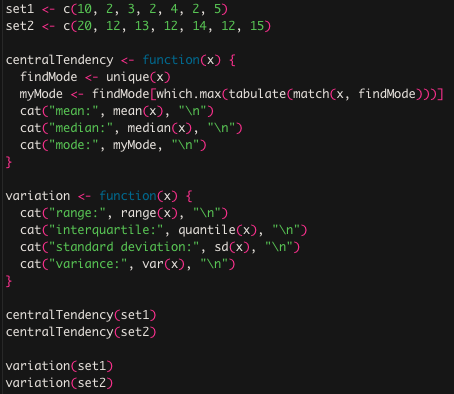

Jesse Graham
Adv Stats & Analytics Blog
Jesse Graham
Adv Stats & Analytics Blog
For this week's assignment I wrote everything into a function so that i would not have to write all the commands
multiple times for finding the information I needed. I formatted it so that it would print my results nicely.

Set 2 had a range that started higher than that of set 1, which resulted in higher means, mode, range and
median. Both sets of numbers had a mode that appeared 3 times, 2 in set1 and 12 in set2. Both sets somehow had
the same standard deviation and variance as well. This is probably a result of set 2's numbers being increased
by 10 compared to those of set1.
assignment2<- c(6,18,14,22,27,17,22,20,22)
myMean <- function(aList) {
return(sum(aList)/length(aList))
}
myMean(assignment2)
The function myMean takes a list of numbers or a vector and returns the average, or mean. The vector called "assignment2" passes through the function where the sum function adds all the numbers within "assignment2" giving you the sum of the contents of the vector. The function length() then finds the amount of individual numbers within the vector which is 9. It then divides the sum of all numbers by the length of all numbers resulting in the average or mean of the vector. When the function is called myMean(assignment2) it returns an average of 18.66667